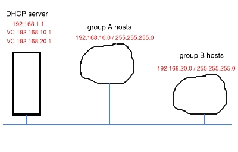
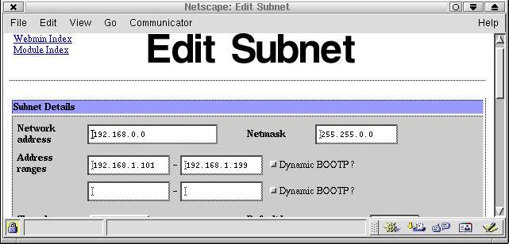
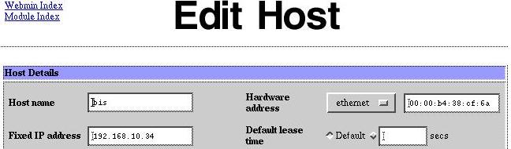
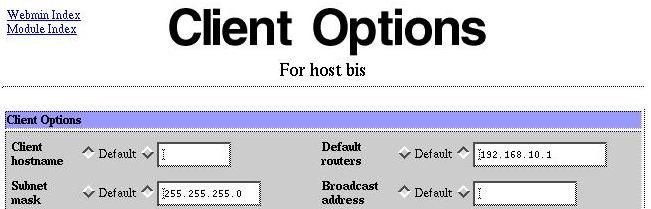
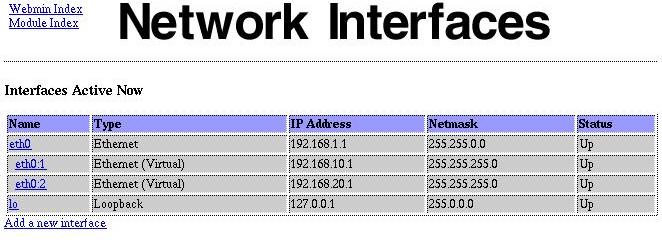

|
...making Linux just a little more fun! |
By Alan Ward |
Why subnet?
As hardware prices go down and local networks grow larger, a new size of local network is becoming common: the size in between the small office (5-10 hosts) and the large corporate building-sized LAN (more than 50 hosts).
With less than 10 hosts, it is generally easy to manage the network: all hosts get on to the same Ethernet segment, and security -- if necessary -- is implemented at host level: passwords and such. With more than 50 hosts, you can generally obtain funding for managed switches than can define virtual networks (VLANs). The Accounting Department will go on one VLAN, Production on another and so forth. Every host will have access to other hosts in its VLAN and to the company servers, but not across VLANs. Security is managed at both host and network levels.
On middlish-sized local networks however, we often must put all hosts on the same segment once more. Recent cheap LAN switches are capable of handling traffic between up to 50 hosts easily. However, switches with VLAN capability are much more expensive. Well-known brands are selling for upwards of US $1200 for a 24-port switch, which may be worth it -- but is completely out of many budgets. Mine for one.
DHCP and subnetworks
One of the local networks I administer in the school I work in is a long string of non-managed Ethernet switches. This is basically because of how the building was initially drawn up. On this, I must handle traffic from several different types of host; to simplify let's say I have teacher-level traffic (group A) and student-level traffic (group B). These must not mix: I do not want people from each group accessing the other group's files or printers (passwords tend to be weaker than I would like).
The simplest way to separate the groups at logical level is to give each group a different IP network address. For example, group A gets addresses on network 192.168.10.0 (e.g. 192.168.10.12), while group B get addresses on network 192.168.20.0 (e.g. 192.168.20.34). Servers that are present on both must have an address on each network.

Our network topology
A DHCP server is a good way of doing this. This is the service you access when using a dial-up Internet connection: you connect to your ISP, who assigns you a temporary public IP address. Most Linux distributions include a DHCP server, which can also be used on a local network.
Initially, you can give the DHCP server a range of IP addresses to distribute: for example 192.168.1.100 to 192.168.1.199. Any host that starts up and asks for an address will get one of these. After the host is switched back off, the address will be liberated and can be re-used on another host if needed.
But Ethernet cards all carry a unique identification number, called a MAC address. This is a 12-digit hexadecimal number that is assigned by the manufacturer, and that is guaranteed to be different from any other Ethernet card, anywhere in the world. A DHCP server can be configured to use this MAC address to always assign the same IP address to the host.
Using this, we can make a list of the MAC addresses of the hosts in our group A, and make DHCP serve them fixed IP addresses on the 192.168.10.0 subnet. The MAC addresses of hosts in group B are served addresses on the 192.168.20.0 subnet, and hosts that are not on either list (visitors' laptops, for example) get an address on subnet 192.168.1.0 .
DHCP has an advantage over VLANs in this respect: VLANs are defined for physical network ports, while DHCP uses card addresses. With a VLAN, if you physically change your computer's network connection -- as in moving from one room to another -- you may also change its VLAN. With DHCP however, its subnet assignation will remain the same.
Setting up DHCP
On most Linux distributions, the DHCP server is called dhcpd, and is started with the standard scripts (the same as httpd, postfix, ...). It can be found in RPM form, as for example in dhcp-3.0-3mdk.i386.rpm. If you already have it installed on your system, try the dhcpd and dhcpd.conf man pages.
To begin, I used the webmin utility to set up a basic subnet DHCP service. Notice that this service has to be on network 192.168.0.0 with netmask 255.255.0.0 . This is because it must be accessible from al subnets.

I then set up each specific host, specifying it's name, hardware MAC address and the IP address I want to serve to it. Note the IP address, now on subnet 192.168.10.0 .

To obtain the Ethernet MAC address, most cards have it printed on a label sticking to the card. It yours does not, you can skip this step for the moment. Finish setting up the DHCP service and fire up the hosts one by one. As each host obtains an IP address (on subnet 192.168.1.0 for the time being), you will see it appear in file /var/lib/dhcp/dhcpd.leases. For example:
lease 192.168.1.198 {
hardware ethernet 00:00:b4:38:cf:6a;
client-hostname "bis";
}
Please note that only addresses obtained from the general subnet will appear here; not when you have given a host a fixed address.
Finish setting up the fixed addresses for hosts on the DHCP server.
Start or restart the DHCP server. Hosts should now be obtaining their assigned IP addresses. You can see this on a Linux host with the ifconfig utility. On a Windows box, you can use winipcfg under Win95/98/ME, or ipconfig (in a terminal window) under WinNT/2k.
But network masks should now still be the default 255.255.0.0 . This is not good, as hosts on subnets 192.168.10.0 and 192.168.20.0 can see each others (try a ping). We should now go to each host definition for dhcpd, and in the "edit client options" set its subnet mask as 255.255.255.0 and its default router to 192.168.X.1 for subnet 192.168.X.0 . For example, on subnet 192.168.10.0:

Remember to also set the network mask to 255.255.255.0 for the general 192.168.0.0 subnet client options.
You can edit the /etc/dhcpd.conf file by hand. It may even be more clear than the webmin interface. This is what you could have:
#
# main subnet, accessed by default by hosts we do not know
#
subnet 192.168.0.0 netmask 255.255.0.0 {
option subnet-mask 255.255.255.0;
option routers 192.168.1.1;
range 192.168.1.101 192.168.1.199;
}
#
# host definition, one for each known host on our LAN
#
host bis {
option subnet-mask 255.255.255.0;
option routers 192.168.10.1;
hardware ethernet 00:00:b4:38:cf:6a; # 12-digit hex MAC address
fixed-address 192.168.10.34;
}
Making the server accessible
In the above example, we made 192.168.X.1 the default router for each
subnet 192.168.X.0 . But for the time being, our server has IP address
192.168.1.1 -- which means that:
This is why our server must have an extra IP address for each subnet: 192.168.10.1, 192.168.20.1, etc. This can easily be set up by creating virtual network cards eth0:1, eth0:2, etc. with webmin:

You can also create this by hand. On a Mandrake or Red Hat distribution, the files are in /etc/sysconfig/network-scripts. You should already have a file called ifcfg-eth0. Copy this as ifcfg-eth0:1, ifcfg-eth0:2, ... changing the addresses and netmasks as appropriate. For example, for eth0:1 :
BROADCAST=192.168.10.0 DEVICE=eth0:1 NETMASK=255.255.255.0 IPADDR=192.168.10.1 NETWORK=192.168.10.0 ONBOOT=yes BOOTPROTO=none
This is basically all you need. You may now have to enable routing on the server, for example if you are using it to access Internet. But be careful to disable routing between local subnets; 192.168.X.0 should not be able to see 192.168.Y.0 . Use a firewalling package such as iptables to block this. You can also use this to block or allow Internet access from any or all subnets if you wish.
PS. Should anybody want to translate this article: I wrote it in the spirit of the GPL software licence. i.e. you are free (and indeed encouraged) to copy, post and translate it -- but please, PLEASE, send me notice by email! I like to keep track of translations -- it's good for the curriculum :-)